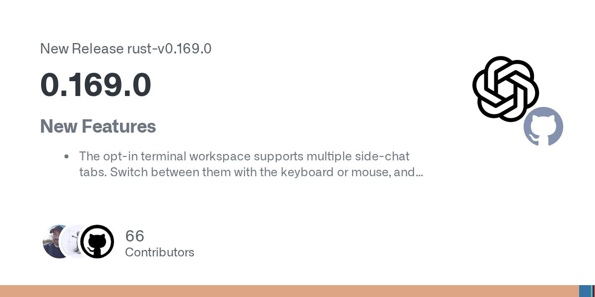
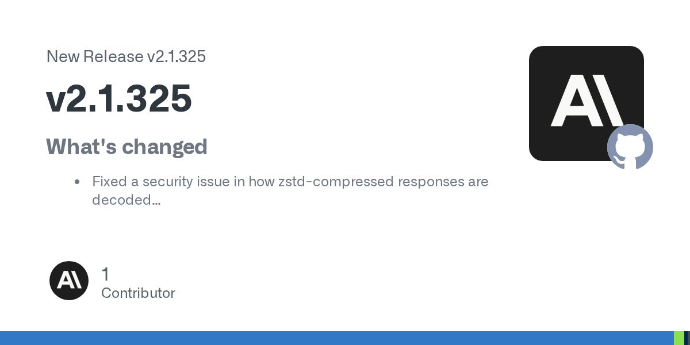
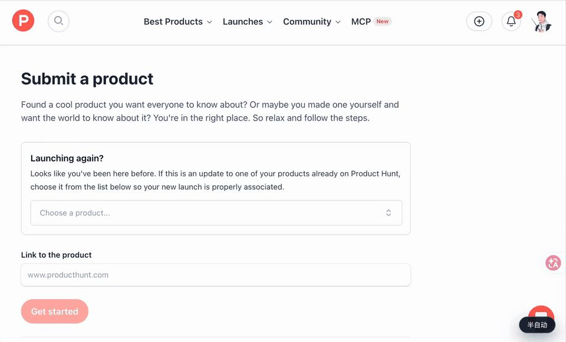

ChatGPT Wallet 发布。
原文正文要点
用户每次付款前要核对商品、总价和所选的卡，再通过 Face ID 或指纹确认；支付网络生成支付令牌，商家和 Agent 都拿不到真实卡号。由 American Express、Mastercard、Visa 合作推出，先在 dots 中向美国 18 岁以上的 ChatGPT Pro 用户开放。OpenAI（11-13）
面向 AI 初学者的每日资讯：要闻、工具、项目与需求动态。
最新一期
时间窗口：11-13 08:20 到 11-14 08:20（台北时间）。周末官方渠道更新较少，本期为短版；已与前 7 期去重，每条均核对正文与日期。
用户每次付款前要核对商品、总价和所选的卡，再通过 Face ID 或指纹确认；支付网络生成支付令牌，商家和 Agent 都拿不到真实卡号。由 American Express、Mastercard、Visa 合作推出，先在 dots 中向美国 18 岁以上的 ChatGPT Pro 用户开放。OpenAI（11-13）
独立开发者 Charlie Reams 写出约 19.4 万行 Lean4 代码，全部通过机器验证；据报道，过程中发现并修补了 2013 年原证明中的 11 处问题。AIbase（11-13 17:48）
CFO Colette Kress 出任临时 CEO，董事会已开始遴选正式继任者。量子位（11-13 17:02）
用户用日常语言描述情绪、故事或曲风，AI 生成歌词、作曲、编曲和演唱，支持「做同款」。国内标准会员约 30 元/月，可以生成 150 首。AIbase（11-13 15:01）

终端工作区支持多个侧聊标签；可以在终端中添加或编辑自定义模型供应商；可以按名称、提示词或工作目录搜索旧任务。Release（11-13 16:39）

以修复为主，涉及安全问题、子 Agent 的模型选择，以及异常退出后恢复会话。Release（11-14 04:40）
一位没学过编程的女装批发店主，借助 AI 编程做了拍照入单、拍照识款、群内店务助理、销售录音复盘和银行流水自动对账等功能（作者自述）。他的原则是：涉及资金的操作先生成确认单，当事人确认后才执行；数据对不上时整份简报不发。电鸭（11-13 13:21）

开源的 Chrome 扩展加本地 MCP Server，让支持 MCP 的 Agent 操作用户正在使用的 Chrome，可以点击、输入、读取页面和截图。V2EX（11-13 22:40）
发帖人想用 AI 管理手机，已经购买 ESP32-S3，需要有人帮忙完成部署；帖子未写预算和细节。电鸭（11-13 19:03）
项目基于 New API，招募负责平台维护、故障排查和客户接入的技术伙伴；先付费试合作，再商定固定维护费和分成。电鸭（11-13 21:09）
一家 AI 视频与 AI 短剧公司招聘，月薪 10K–25K，要求熟悉可灵、即梦、Runway、Veo、Sora 等工具，并有剪辑经验。电鸭（11-13 17:29）
Cursor Changelog 最新一条为 11-06；Anthropic News、Google AI Blog 窗口内无新内容；Product Hunt 产品页被 Cloudflare 拦截；OpenAI 文章页改用网页读取核验。